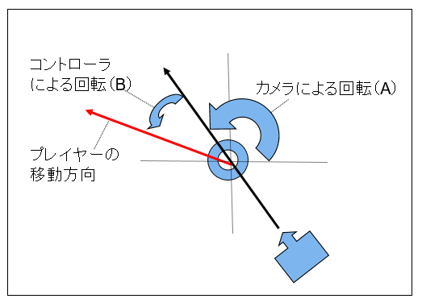

１．フルバージョンチュートリアル
１０３．プレイヤーを動かす
このサンプルはFullTutorial003というディレクトリに含まれます。BaseCrossDx11.slnというソリューションを開くとDx11版が起動します。
リビルドして実行すると以下の画面が出てきます。球体が1つ表示されます。

図0103a
解説
この球体はプレイヤーです。ただの球ではないかと思うかもしれませんが、ただの球であることが重要です。ゲームはまず真っ先にゲームのルールを考える必要があります。世界観やキャラクターを考えるべきではありません。BaseCrossはモデルの表示にも対応してますが、まずはプリミティブなオブジェクトでゲームのルールを考え、世界観やキャラクターはそのルールに合わせて用意すべきです。まずXBoxコントローラを装着して、左スティックを動かしてみてください。プレイヤーが移動し、カメラがそのあとをついていきます。
右スティックで、カメラの位置が変化します。左右に動かせばカメラがプレイヤーを中心に回転します。上下に動かせばカメラ位置が上下に移動します。
さらには左十字キーを操作すればカメラが引くもしくは寄る処理になります。
このカメラはLookAtCameraといってデバッグ用のカメラです。実際にゲームで使用するためには、各自考えましょう。カメラのカスタマイズの仕方は後述します。
さて、コードはPlayer.h/cppの記述します。以下はヘッダ部です。
//--------------------------------------------------------------------------------------
/// プレイヤー
//--------------------------------------------------------------------------------------
class Player : public GameObject {
//最高速度
float m_MaxSpeed;
//減速率
float m_Decel;
//質量
float m_Mass;
//文字列の表示
void DrawStrings();
public:
//構築と破棄
//--------------------------------------------------------------------------------------
/*!
@brief コンストラクタ
@param[in] StagePtr ステージ
*/
//--------------------------------------------------------------------------------------
Player(const shared_ptr<Stage>& StagePtr);
//--------------------------------------------------------------------------------------
/*!
@brief デストラクタ
*/
//--------------------------------------------------------------------------------------
virtual ~Player() {}
//アクセサ
//--------------------------------------------------------------------------------------
/*!
@brief コントローラから方向ベクトルを得る
@return 方向ベクトル
*/
//--------------------------------------------------------------------------------------
Vec3 GetMoveVector() const;
//--------------------------------------------------------------------------------------
/*!
@brief プレイヤーを移動させる
@return なし
*/
//--------------------------------------------------------------------------------------
void MovePlayer();
//--------------------------------------------------------------------------------------
/*!
@brief 最高速度を得る
@return 最高速度
*/
//--------------------------------------------------------------------------------------
float GetMaxSpeed() const {
return m_MaxSpeed;
}
//--------------------------------------------------------------------------------------
/*!
@brief 減速値を得る
@return 減速値
*/
//--------------------------------------------------------------------------------------
float GetDecel() const {
return m_Decel;
}
//--------------------------------------------------------------------------------------
/*!
@brief 質量を得る
@return 質量
*/
//--------------------------------------------------------------------------------------
float GetMass() const {
return m_Mass;
}
//--------------------------------------------------------------------------------------
/*!
@brief 初期化処理
@return なし
*/
//--------------------------------------------------------------------------------------
virtual void OnCreate() override;
//--------------------------------------------------------------------------------------
/*!
@brief 更新処理
@return なし
*/
//--------------------------------------------------------------------------------------
virtual void OnUpdate() override;
//--------------------------------------------------------------------------------------
/*!
@brief 後更新処理
@return なし
*/
//--------------------------------------------------------------------------------------
virtual void OnUpdate2() override;
};
初期化
では、実体を見てみましょう。Player.cppに記述があります。まず、コンストラクタです。ここでは各メンバ変数をメンバイニシャライズで初期化しています。
Player::Player(const shared_ptr<Stage>& StagePtr) :
GameObject(StagePtr),
m_MaxSpeed(10.0f), //最高速度
m_Decel(0.95f), //減速値
m_Mass(0.5f) //質量
{}
続いて、Player::OnCreate()関数です。
//初期化
void Player::OnCreate() {
//初期位置などの設定
auto Ptr = GetComponent<Transform>();
Ptr->SetScale(0.25f, 0.25f, 0.25f); //直径25センチの球体
Ptr->SetRotation(0.0f, 0.0f, 0.0f);
Ptr->SetPosition(0, 0.125f, 0);
//Rigidbodyをつける
auto PtrRedid = AddComponent<Rigidbody>();
//衝突判定をつける
auto PtrCol = AddComponent<CollisionSphere>();
PtrCol->SetIsHitAction(IsHitAction::Auto);
//デバッグ用文字列をつける
auto PtrString = AddComponent<StringSprite>();
PtrString->SetText(L"");
PtrString->SetTextRect(Rect2D<float>(16.0f, 16.0f, 640.0f, 480.0f));
//影をつける（シャドウマップを描画する）
auto ShadowPtr = AddComponent<Shadowmap>();
//影の形（メッシュ）を設定
ShadowPtr->SetMeshResource(L"DEFAULT_SPHERE");
//描画コンポーネントの設定
auto PtrDraw = AddComponent<BcPNTStaticDraw>();
//描画するメッシュを設定
PtrDraw->SetMeshResource(L"DEFAULT_SPHERE");
//描画するテクスチャを設定
PtrDraw->SetTextureResource(L"TRACE_TX");
//透明処理
SetAlphaActive(true);
//カメラを得る
auto PtrCamera = dynamic_pointer_cast<LookAtCamera>(OnGetDrawCamera());
if (PtrCamera) {
//LookAtCameraである
//LookAtCameraに注目するオブジェクト（プレイヤー）の設定
PtrCamera->SetTargetObject(GetThis<GameObject>());
//注目点をオブジェクト位置から少し上方にする
PtrCamera->SetTargetToAt(Vec3(0, 0.25f, 0));
}
}
続いて、Update系コンポーネントを追加します。プレイヤーに設定するUpdate系コンポーネントはRigidbody、CollisionSphereの2つです。今回のサンプルでは、衝突する相手は配置されてませんが、Gravity行動を実装しているため、プレイヤーは常にプレート（ゲーム盤）と衝突します。
また、StringSpriteコンポーネントも追加します。これはデバッグ用の文字列を表示されすためのもので、プレイヤーの現在の位置や速度、重力による速度や、衝突している相手を表示します。
カメラは
//カメラを得る
auto PtrCamera = dynamic_pointer_cast<LookAtCamera>(OnGetDrawCamera());
if (PtrCamera) {
//LookAtCameraである
//LookAtCameraに注目するオブジェクト（プレイヤー）の設定
PtrCamera->SetTargetObject(GetThis<GameObject>());
//注目点をオブジェクト位置から少し上方にする
PtrCamera->SetTargetToAt(Vec3(0, 0.25f, 0));
}
また、カメラ視点をオブジェクト位置から少し上方にしています。こうすることで、プレイヤーを操作しやすくなります。
更新
更新処理はPlayer::OnUpdate()関数に記述します。記述は以下です。
void Player::OnUpdate() {
//プレイヤーの移動
MovePlayer();
//重力を加える
auto PtrGrav = GetBehavior<Gravity>();
PtrGrav->Execute();
}
auto PtrGrav = GetBehavior<Gravity>();
例えば重力をかけるなどの処理はある程度決まった処理です。ですのでクラス化されています。
ここで行動とコンポーネントの違いについて考えます。コンポーネントは道具のようなものです。それに対して行動はコンポーネントに影響を与える処理と考えられます。
プレイヤーの移動は、MovePlayer()関数を呼び出します。以下はその実体です。
void Player::MovePlayer() {
float ElapsedTime = App::GetApp()->GetElapsedTime();
Vec3 Angle = GetMoveVector();
//Rigidbodyを取り出す
auto PtrRedit = GetComponent<Rigidbody>();
auto Velo = PtrRedit->GetVelocity();
if (Angle.length() <= 0.0f && Velo.y == 0.0f) {
//コントローラを離したとき対策
Velo *= GetDecel();
PtrRedit->SetVelocity(Velo);
return;
}
//Transform
auto PtrTransform = GetComponent<Transform>();
//現在の速度を取り出す
//目的地を最高速度を掛けて求める
auto Target = Angle * GetMaxSpeed();
//目的地に向かうために力のかける方向を計算する
//Forceはフォースである
auto Force = Target - Velo;
//yは0にする
Force.y = 0;
//加速度を求める
auto Accel = Force / GetMass();
//ターン時間を掛けたものを速度に加算する
Velo += (Accel * ElapsedTime);
//速度を設定する
PtrRedit->SetVelocity(Velo);
//回転の計算
if (Angle.length() > 0.0f) {
auto UtilPtr = GetBehavior<UtilBehavior>();
UtilPtr->RotToHead(Angle, 1.0f);
}
}
Vec3 Angle = GetMoveVector();

図0103b
そして取得した移動ベクトルをもとに、フォース（力）を作成します。フォースの計算は以下のように算出します。

図0103c
上図は現在の速度と目標地点から、どの方向にフォースをかければいいのかを図解したものです。単純に目標地点に向かってフォースをかけるのではなく、ベクトルの引き算で求めているのがわかります。
フォースが決まったら加速度を求めます。加速度はフォースを質量で割って求めます。
そしてその加速度を、前回からののターン時間をかけて、現在の速度に加算します。算出した速度はRigidbodyコンポーネントを介して設定します。
またこの関数では進行方向を見るという処理をしています。
そして文字列の表示はPlayer::Update2()関数に記述します。この関数はUpdateの後処理と言える関数です。
void Player::OnUpdate2() {
//文字列の表示
DrawStrings();
}
今回紹介したサンプルは、プレイヤーの動きの中でも、非常に単純なものとなっています。
実際のゲーム内のプレイヤーは、もっともっと活動的ですし、もっと多くの処理を必要とします。
次項では、プレイヤーに限らず、オブジェクトを効率よく更新させる方法としてステートと行動を紹介します。